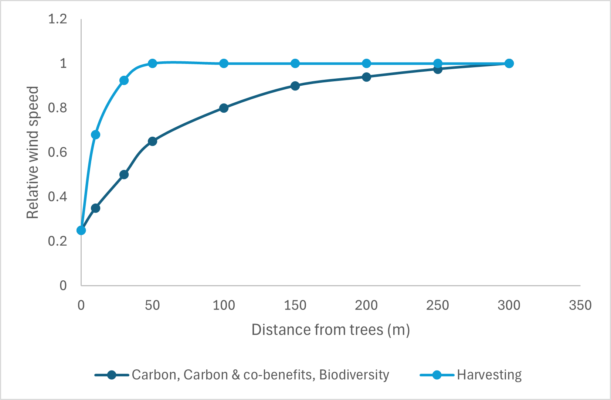
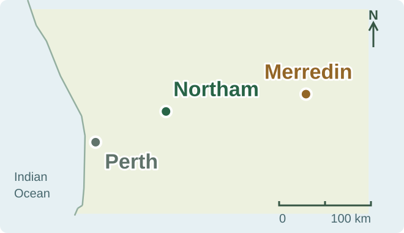

The tree belt or block refers to the area occupied by planted trees, including an adjacent side buffer.
The side buffer is treated as a no-cropping zone immediately next to the trees where production is negligible or uneconomic.
In this analysis, the side buffer is 4 m wide for belts and 5 m wide for blocks.
Competition Zone
The competition zone is the adjacent area that remains cropped or grazed under normal management.
Production in this zone can be influenced by both negative interactions (for example, water, light, and nutrient competition) and positive interactions (for example, shelter and micro-climate moderation).
Figure: Belt layout and spacing definitions used in this analysis.
Background
This section provides background information regarding on-farm tree planting.
Main Costs
The costs associated with tree plantations include establishment and maintenance costs, the opportunity cost of land planted to trees, and impacts to adjacent land.
Many of these costs can be adjusted in the Advanced Inputs section below.
Shelter
Trees can offer valuable shelter to livestock, reducing exposure to harsh weather, lowering energy expenditure, and improving survival rates, particularly for vulnerable animals such as twin-bearing ewes.
The economic benefits of shelter depend on livestock behaviour, mob priority and management, and paddock configuration. Benefit is higher when high-priority mobs are placed in sheltered paddocks and when paddock layout improves shelter access.

Adjacent Pasture and Crop Production
Tree belts can influence pasture and crop yields through competing effects. Yield can be reduced near trees due to shading and competition for water and nutrients, while further from trees wind protection can increase productivity.
In this analysis, production is reduced by 38% between 0 and 11.2 m from trees, and increased by 4% between 16 and 80 m from trees.
Harvested trees have half the interaction with adjacent land.
Carbon Sequestration
Planting trees can sequester carbon. Projects registered under the ACCU Scheme can generate tradable carbon credits (ACCUs).
Once generated, credits can be sold, held as a future asset, or inset on-farm to offset farm emissions. Establishing a carbon project can also involve monitoring, administration, and compliance costs.
The calculation applies land management unit (LMU) scalars: good soils use 1.00, while poor soils use 0.70 in the Central Wheatbelt and 0.845 in the Eastern Wheatbelt. A further 5% risk deduction is applied.
Biodiversity
Tree plantations, particularly with native species, can enhance on-farm biodiversity. Emerging environmental markets may provide incentives and income streams for projects that deliver biodiversity outcomes.
Credit yields and prices can vary substantially by vegetation type and local demand. Past observations commonly report around 4-8 credits/ha and values often in the order of $2,300-$8,500 per credit.
Projects may also face setup and annual monitoring costs.
Biomass Production
Above-ground biomass can be harvested and sold for clean energy and biofuel pathways (for example, via pyrolysis).
Costs can include harvesting, on-farm handling, and road transport to processing facilities.
The calculation applies LMU scalars: good soils use 1.00, while poor soils use 0.39 in the Central Wheatbelt and 0.69 in the Eastern Wheatbelt.
Micro-climate
At farm scale, trees can influence micro-climate through evapotranspiration, local humidity changes, and temperature moderation, and may contribute to small local rainfall changes.
In this tool context, a 10 km rainfall footprint is used and a 15% increase in tree cover is associated with a 2.6% rainfall increase assumption.
Substantial tree area may be required before measurable on-farm production gains are observed.
Groundwater and Salinity
Deep-rooted vegetation can reduce groundwater recharge and help limit the rise of saline groundwater when plantings are strategically located within contributing recharge areas. However, the magnitude and timing of the salinity benefit are highly site-specific, and substantial revegetation may be required before a measurable reduction in salinity spread occurs.
This tool assumes that salinity expands by 23 ha/year in the Central Wheatbelt and 43 ha/year in the Eastern Wheatbelt. The annual cost of saline land is valued at $123/ha in the Central Wheatbelt and $82/ha in the Eastern Wheatbelt. Tree planting in recharge zones reduces this expansion in proportion to the contributing recharge area influenced. WA Wheatbelt modelling found recharge reductions of about three to ten times the area occupied by oil-mallee canopy (Bennett et al. 2012).
Erosion
Vegetation can also support erosion control by stabilising soil and reducing wind and water impact. Financial outcomes are highly farm-specific and depend on local conditions and existing management practices.
In this analysis, the benefits of erosion mitigation are only allocated to belt plantings.
The value benefit was estimated based on reduced erosion risk allowing an additional 250 kg DM per hectare to be grazed.
Quantifying Whole-Farm Interactions
The physical effects of livestock shelter, adjacent pasture and crop production, salinity, erosion, and micro-climate are converted into annual economic values using the Australian Farm Optimisation (AFO) model, an advanced whole-farm bio-economic optimisation model.
This tool uses AFO-derived values for the relevant location, soil, planting design, and planting area. It does not run the full AFO model in the browser.
View AFO-derived values and how they are applied
Interaction
Embedded AFO output
Varies by
Land opportunity cost
$23-$171.40/ha of trees/year
Region, soil and planting area
Livestock shelter
$0-$11.75/ha of trees/year benefit
Region, planting design, soil and area
Adjacent production
$13-$384/ha of trees/year cost
Region, planting design and soil
Micro-climate
Central $8.90; Eastern $25.55/ha of trees/year benefit
Region and production-increase assumption
Erosion/increased grazing
$0-$27.24/ha of trees/year benefit
Region and planting design; blocks receive zero
Cost of saline land
Central $123; Eastern $82/ha of saline land/year
Region
Land opportunity cost and adjacent production impacts are included directly in every scenario. Shelter, micro-climate, erosion and salinity benefits can be switched on or off by the user.
Land, shelter, adjacent production, micro-climate and erosion values are already expressed per hectare of trees per year. The cost of saline land is instead combined with the additional saline area and the share of its contributing recharge area influenced by trees.
Belts are narrow strips of trees with cropping or grazing land between them. Blocks concentrate trees in a broader planted area.
The diagram shows one belt containing two tree rows. Inter-row spacing is the gap between rows within a belt; separate belts have cropping or grazing land between them.
Choosing a location
The model uses representative farming systems based around Northam and Merredin to capture contrasting production conditions.
Choose Central Wheatbelt for higher-production conditions and Eastern Wheatbelt for lower-production conditions. Use the closest match to your farm's production, rather than its location alone. These settings can also represent other Wheatbelt areas with similar production.
Location mainly affects the land opportunity cost: the farming profit forgone by allocating land to trees. It also changes tree-growth assumptions and several farm benefits.
Apply care outside the Wheatbelt, where the underlying assumptions may be less suitable.
View location map

Northam — Central WheatbeltHigher-production model setting.
Merredin — Eastern WheatbeltLower-production model setting.
Reference towns shown at approximate locations. Choose the closest production conditions; these settings do not define geographic boundaries or correspond directly to WNRM sub-regions. Coastline: Natural Earth. Open the original WNRM sub-region map (PDF).
Choosing a planting focus
Carb Block — Carbon block: A block of trees planted primarily for carbon sequestration.
Carb Belt — Carbon belt: Narrow belts planted for carbon sequestration and benefits such as livestock shelter.
Bio Block — Biodiversity block: A lower-density planting of trees and shrubs focused on biodiversity.
Harv Belt — Harvesting belt: Belts managed for periodic biomass harvesting.
Choose the design closest to your proposed planting, then compare alternatives. The focus sets planting and management assumptions; the scenario checkboxes control which income streams and benefits are included.
Compare options using annualised economic impact in dollars per hectare of trees per year.
Soil production potential
Choose for the land you intend to plant. Good represents 100% production potential for crops or pastures; Poor represents 70% of that potential under similar regional conditions.
Soil choice affects farming profit forgone, tree growth and interactions with adjacent land.
Price scenarios
Standard uses the price or value in Advanced Inputs. Low reduces it by 50%; High increases it by 50%.
Land opportunity cost
It represents farming profit forgone, rather than the purchase value of land.
The current estimate comes from AFO-derived values selected by region, soil and planting area.
Advanced inputs
These inputs start with default assumptions. Change only the values for which you have better information; all other values keep their current settings. Leave existing values in place rather than clearing fields, as blanks do not restore defaults. Changes are saved in this browser. Use Reset to restore all inputs, including scenario selections, to their defaults.